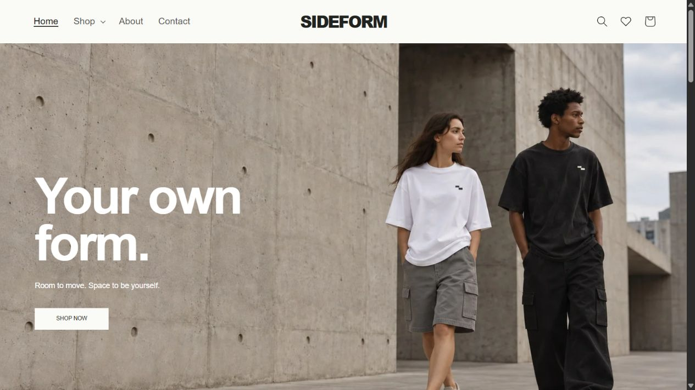
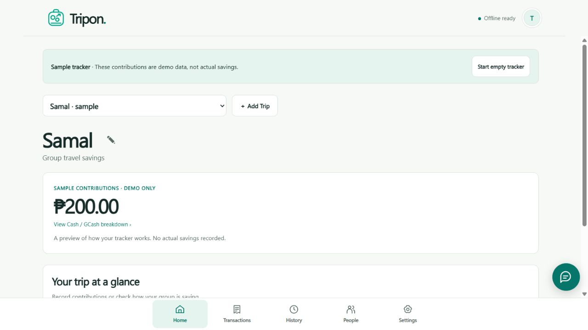
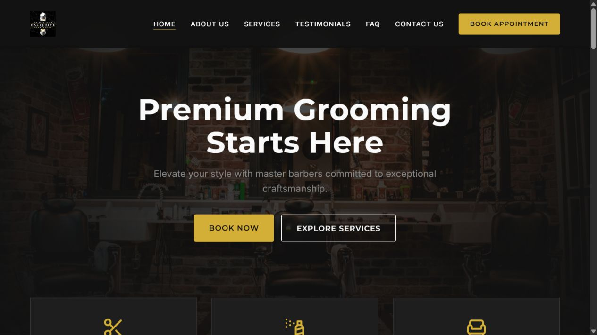
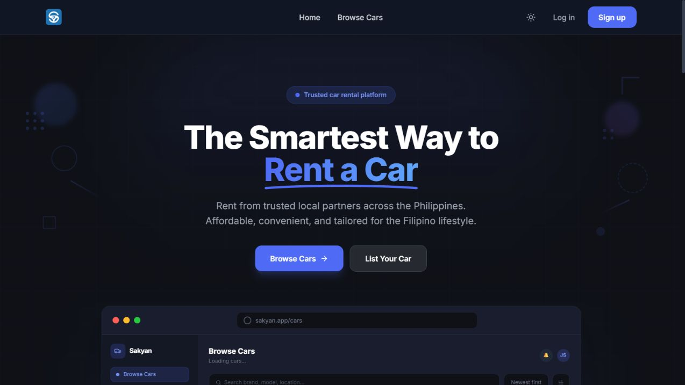
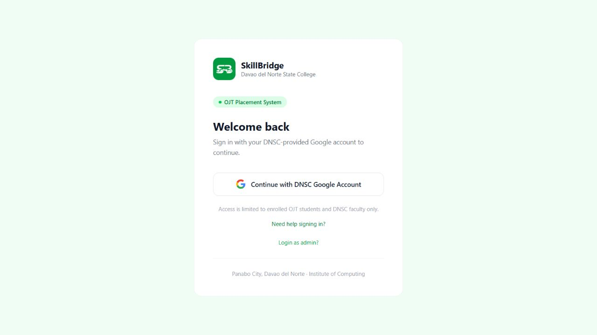
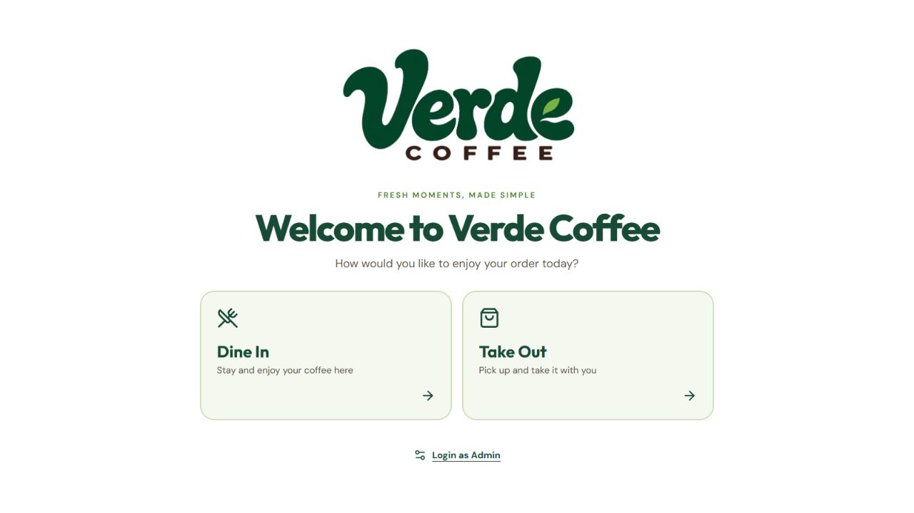
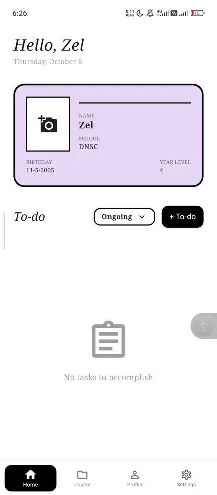
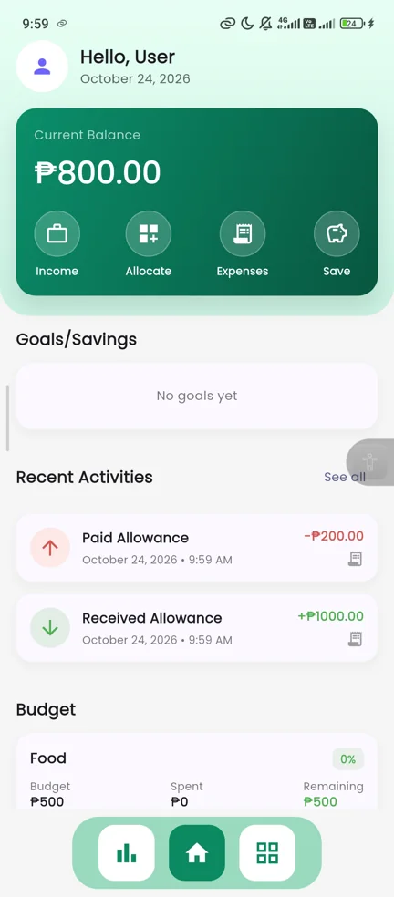

01
Web Development
Bringing website designs to life.
HELLO, I’M DAVID
Web Developer & UI/UX Designer
I enjoy designing digital interfaces and bringing them to life through web development. Through project-based experience, I explore how visual design and functionality work together to create a better user experience.
Sto. Tomas, Davao del Norte, Philippines
01 / ABOUT ME
My interest in web development began with enjoying website design—exploring layouts, colors, and how different elements fit together. I enjoy turning design ideas into websites and developing my skills in both web development and UI/UX design.
To grow as a web developer and UI/UX designer by strengthening my technical and design skills and contributing to meaningful projects. I aim to work with clients who need thoughtful, functional websites and interfaces, applying my skills to their goals while gaining practical experience.
02 / MY TOOLKIT
A mix of development, visual design, and professional skills shaped through project-based work.
See them in actionBringing website designs to life.
Exploring layouts, color, and interfaces.
From the editor to a live website.
The human side of making things.
03 / SELECTED WORK
Eight completed projects across websites, web applications, and mobile apps.

An apparel e-commerce theme designed for Shopify, with clean product displays and easy-to-navigate shopping.

A group travel savings tracker for recording contributions, monitoring payments, and keeping shared funds organized.

A barbershop website showcasing services and barber profiles to help customers explore their grooming options.

A car rental marketplace connecting customers and rental providers across Davao and Mindanao.


A café ordering system for browsing food and beverages and placing orders through a convenient digital kiosk.

DoneeItSTUDENT PRODUCTIVITYA student productivity app for organizing tasks, tracking progress, and keeping academic activities in one place.

FinancifyPERSONAL FINANCEA personal finance app for tracking income and expenses, allocating budgets, and reviewing spending.
04 / MY JOURNEY
The education and practical experience shaping my next steps.
Davao del Norte State College
Developing my path in web development and UI/UX design.
2022 — 2026 FREELANCE · CLIENT-BASED
Applied clean, solid base colors to comic characters, backgrounds, and objects using Adobe Photoshop, preparing illustrations for colorists to add shading, lighting, and finishing details.
JUNE 15 — 26, 2026 INTERNSHIP
Researched potential customers and collected relevant contact and business information to support outreach and customer prospecting.
CONTINUED LEARNING
Completed networking courses through Cisco Networking Academy.
Cisco Networking Academy · Davao del Norte State College
Cisco Networking Academy · Davao del Norte State College
05 / LET’S CONNECT
I’m interested in connecting with clients who need thoughtful websites and interfaces. Tell me about your project.
Start a conversation